Warum ein Windows-Warnfenster erscheinen kann: SextantFix ist kostenlose Software eines einzelnen Entwicklers, nicht mit einem teuren, kommerziellen Zertifikat signiert. Windows kennt den Herausgeber deshalb nicht und zeigt sicherheitshalber eine Warnung — das bedeutet nicht, dass etwas mit dem Programm nicht stimmt, nur dass es (noch) nicht weit genug verbreitet ist, um Windows bekannt zu sein. Ob die Warnung überhaupt erscheint, hängt von den Smart-App-Control-Einstellungen deines Systems ab.
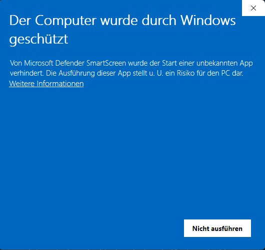
Auf Weitere Informationen klicken, um die Details und einen zweiten Button einzublenden.
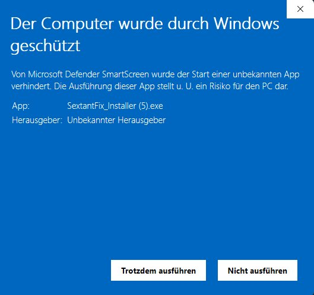
Jetzt Trotzdem ausführen wählen, um mit der Installation fortzufahren.
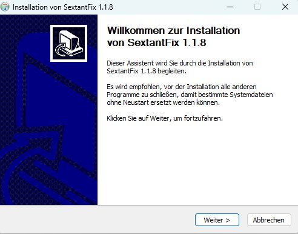
Der Installationsassistent führt danach durch die eigentliche Installation.
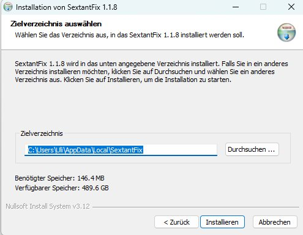
Das vorgeschlagene Zielverzeichnis passt für die meisten Nutzer — einfach auf Installieren klicken.
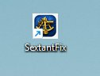
Fertig — auf dem Desktop liegt jetzt eine Verknüpfung, die SextantFix startet.
Kartendaten beim ersten Start: SextantFix lädt beim allerersten Start einmalig Küstenlinien-Daten im Hintergrund herunter, damit die Karte auch offline etwas anzuzeigen hat — ganz ohne Dialog oder Rückfrage, das läuft automatisch mit.
Bevor es losgeht: ein kurzer Rundgang, was wo liegt.
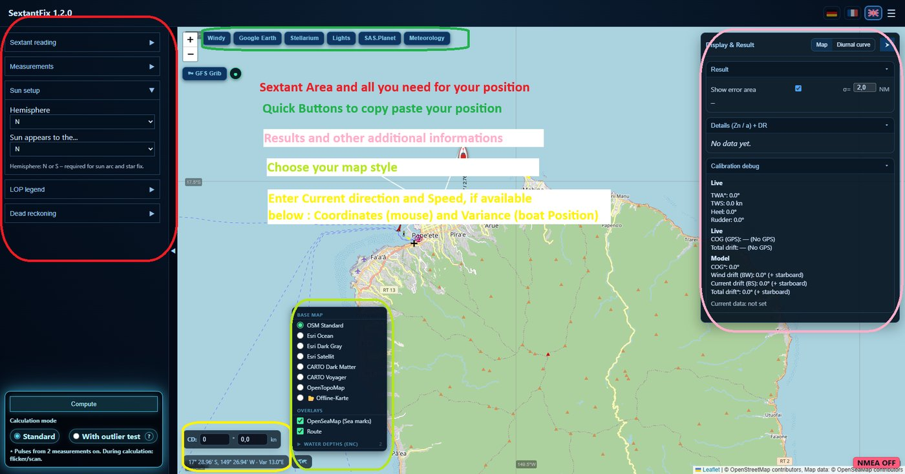
Sextantenmessung eintragen, Sonnen-Setup (Hemisphäre), Standlinien-Legende, Koppelnavigation.
Schnellzugriff-Knöpfe: Windy, Google Earth, Stellarium, Leuchtfeuer, SAS.Planet, Meteorologie — übergeben deine aktuelle Position direkt.
„Anzeige & Result"-Panel — Ergebnisse und weitere Zusatzinformationen (Fehlerbereich, Details, Kalibrierung).
Kartenstil wählen — Basiskarte und Overlays (Seezeichen, Route, Wassertiefen).
Strömung (Richtung / Stärke), Koordinaten an Mausposition, Missweisung an Bootsposition.
Beim ersten Programmstart und ausgeschaltetem GPS kann es sein, dass kein Boot auf der Karte erscheint.
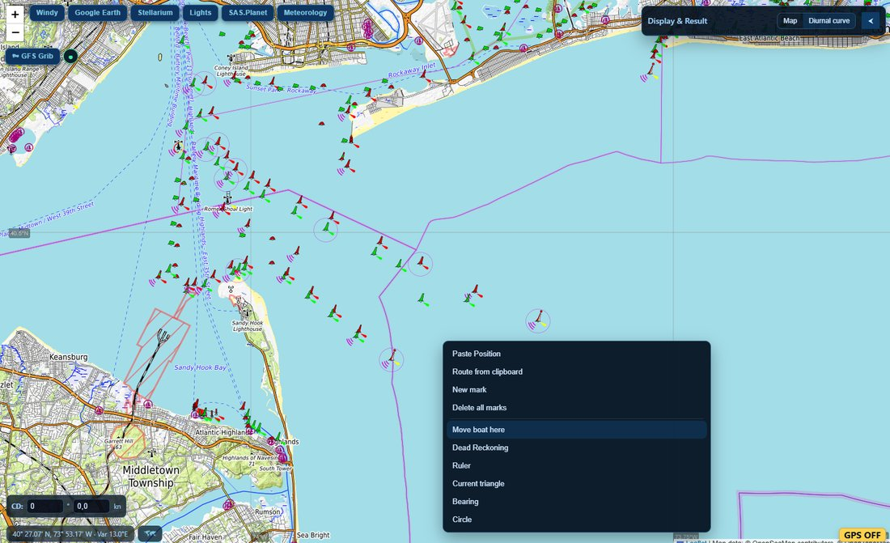
Um alle Funktionen des Programmes zu nutzen, sollte das Boot manuell über Rechtsklick auf die Karte in eine Schätzposition gebracht werden (Move boat here).
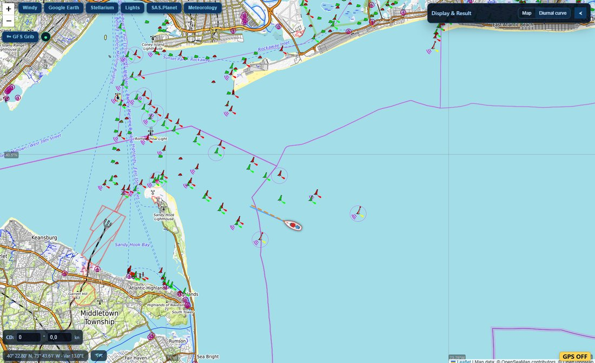
Ohne eigene Messungen anfangen: Über das ☁️-Symbol eine der 20 Beispiel-Messreihen laden (verschiedene Weltregionen) — praktisch zum Ausprobieren, ohne selbst zu peilen. Jede Reihe enthält 10 simulierte Sonnenmessungen über eine Stunde, mit einem Zufallsablesefehler von bis zu 2 Bogenminuten.
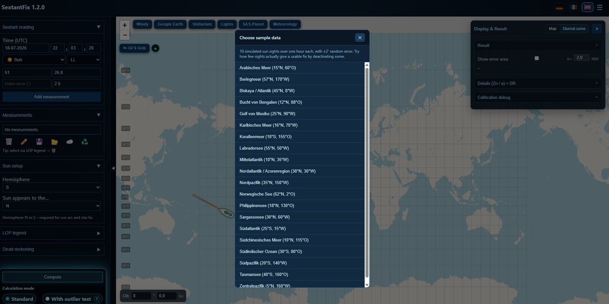
Du musst dabei nicht alle 10 Messungen verwenden — einzelne Messungen lassen sich deaktivieren, um auszuprobieren, wie wenige tatsächlich für einen brauchbaren Fix reichen. Das folgende Beispiel nutzt nur 4 der 10 Messungen:
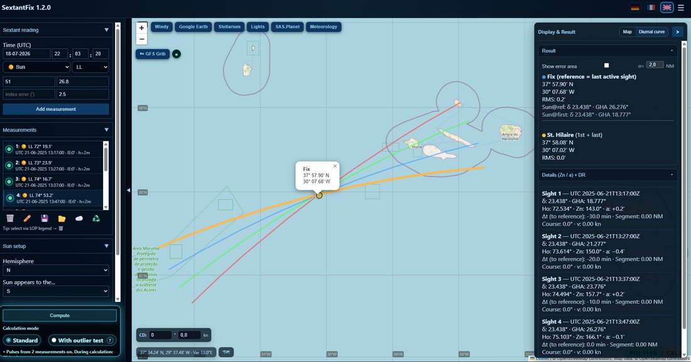
Standlinien und Tagbogenkurve erscheinen erst nach einem Klick auf „Berechnen" — nicht automatisch. Berechnen lässt sich schon ab einer einzigen Messung: SextantFix zeigt dann einen vollständigen Höhenkreis (Circle of Position) statt einer Standlinie — sinnvoll etwa in Kombination mit anderen Standlinien-Arten (Tiefenlinie, Peilung auf ein Objekt oder auch eine ältere Kurslinie).
Jetzt zur eigenen Messung: Beispielhaft wurden 3 Messungen mit einem Halbspiegelsextanten durchgeführt, der Unterrand der Sonne wurde auf den Horizont gesetzt. Die Bilder entstammen einem Simulationsprogramm (Sailaway III von Richard Knoll).
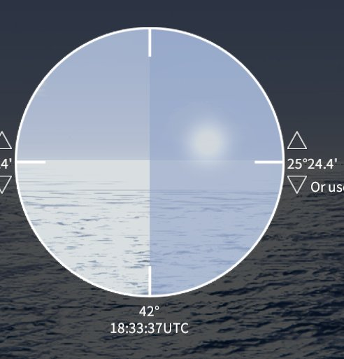
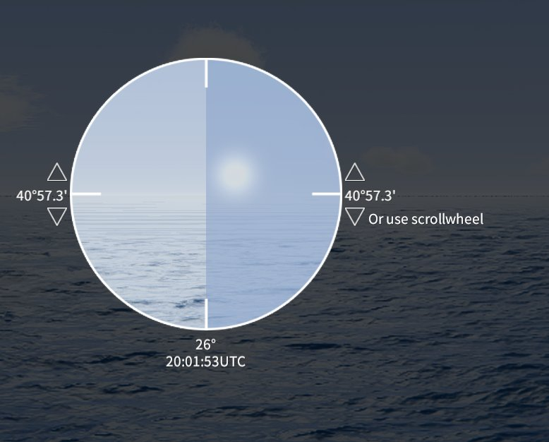
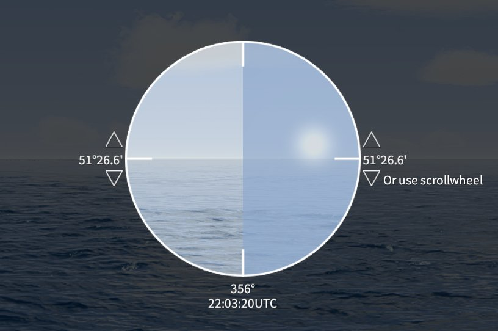
Jede Messung wird über das Panel „Sextant reading“ erfasst: Uhrzeit in UTC, der gemessene Himmelskörper (Sonne, Mond, Planeten oder Sterne), der Messrand (LL = Unterrand, UL = Oberrand, Zentrum), Grad/Bogenminuten der Höhe, Indexfehler (IE) und Augenhöhe. Ein Klick auf „Add measurement“ übernimmt die Werte in die Liste — hier bereits für alle 3 Messungen geschehen.
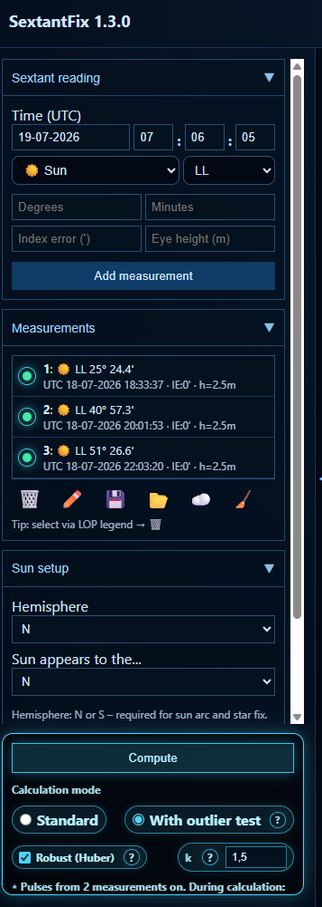
Über die Symbolleiste unter der Messungsliste lassen sich einzelne Messungen bearbeiten (✏️) oder löschen (🗑️) — der grüne Kreis links neben jeder Messung schaltet sie einzeln ein oder aus. Ganze Messreihen lassen sich als Datensatz speichern (💾) und wieder laden (📁), zusätzlich zu den Beispiel-Messreihen aus der Cloud (☁️). Das Besen-Symbol (🧹) löscht dagegen alle Messungen auf einen Schlag — unwiderruflich, falls sie nicht vorher gespeichert wurden.
SextantFix erkennt auffällige Messungen automatisch und geht flexibel mit ihnen um:
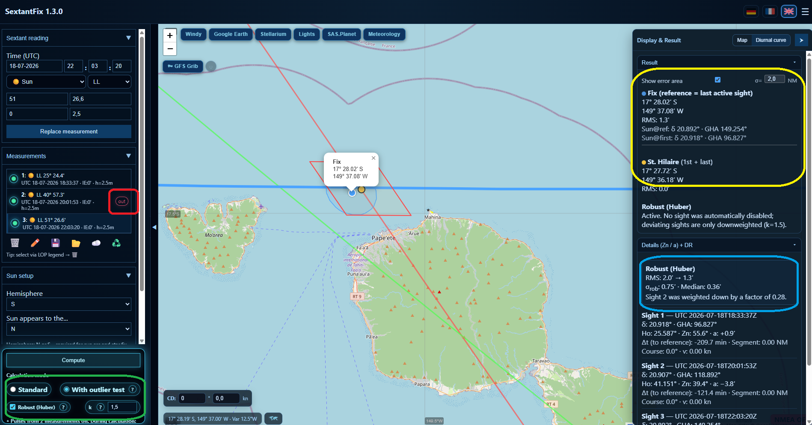
- 🔴 Automatische Ausreißer-Erkennung: SextantFix markiert auffällige Messungen automatisch in zwei Stufen: „sus" (verdächtig) ab einer Abweichung von 2,5σ vom Median, „out" (deutlicher Ausreißer) ab 3,5σ — berechnet über eine robuste Streuung (mittlere Absolutabweichung vom Median), nicht über den RMS-Wert. Hier betrifft das Messung 2 (40°57,3'), markiert als „out".
- 🟢 Umgang mit Ausreißern wählen: Unter „Calculation mode" legst du fest, ob der Fix im Standardverfahren berechnet wird oder Ausreißer berücksichtigt werden — entweder ganz ausgeschlossen oder mit „Robust (Huber)" nur schwächer gewichtet (Faktor k, hier 1,5).
- 🟡 Ergebnisvergleich: Das Panel zeigt den Fix nach Tagbogenverfahren (blauer Punkt) neben der klassischen St.-Hilaire-Lösung aus erster und letzter Messung (oranger Punkt) — optional mit einem einblendbaren Fehlerbereich um die Position.
- 🔵 Huber-Auswertung im Detail: Hier zeigt SextantFix die Auswirkung der Gewichtung — die Standardabweichung sinkt von 2,0' auf 1,3', Messung 2 wurde mit Faktor 0,28 heruntergewichtet statt verworfen.
Das Verfahren nach Ralf Lampalzer berechnet den Fix nicht wie klassische Methoden als Schnittpunkt von Standlinien, sondern als beste Näherung der ortsspezifischen „Sonnenspur" am Himmel — und umgeht damit das Problem schleifender Schnittwinkel. Dadurch ist eine zuverlässige Positionsbestimmung bereits innerhalb einer Stunde möglich, allerdings meist mit mehreren Messungen. Die Lage der Messpunkte zur Kurve macht grobe Ausreißer schon optisch erkennbar; eine genauere Qualitätsbeurteilung liefert der RMS-Wert.
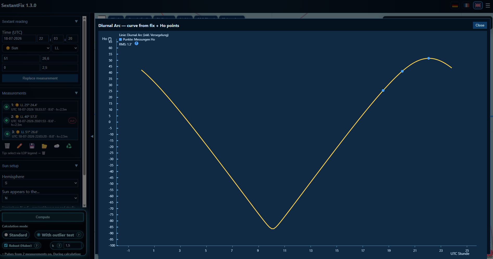
Rechtsklick auf die Karte öffnet das Kontextmenü — darüber lassen sich Peilungen zu Landmarken oder Leuchttürmen setzen. SextantFix bietet zwei Verfahren zur Standortbestimmung über terrestrische Peilungen:
Kreuzpeilung — Standort aus zwei Peillinien
Peilobjekt anklicken, dann Richtung und Länge der Peillinie festlegen — beides wird interaktiv auf der Karte angezeigt. Für die zweite Peillinie wiederholen. Der Standort wird automatisch aus dem Schnittpunkt berechnet.
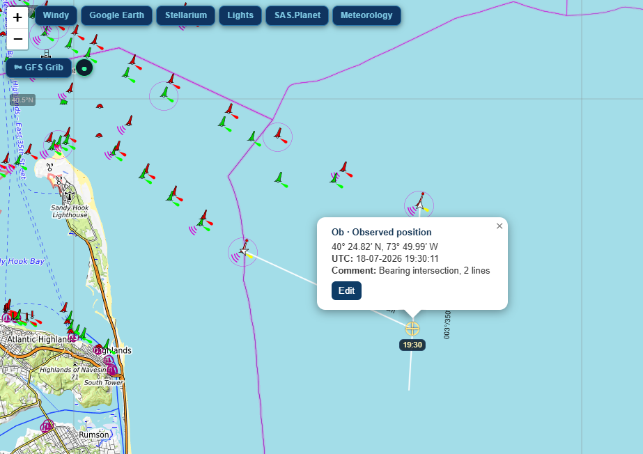
Versegelung — Standort aus zeitversetzten Peilungen
Zwei Peilungen auf dasselbe Objekt setzen, mit ausreichendem Winkel dazwischen. Anschließend Kartenkurs (rechtweisend oder Kompass) und die zurückgelegte Strecke eingeben — die erste Peillinie wird entsprechend verschoben, der Standort automatisch berechnet.
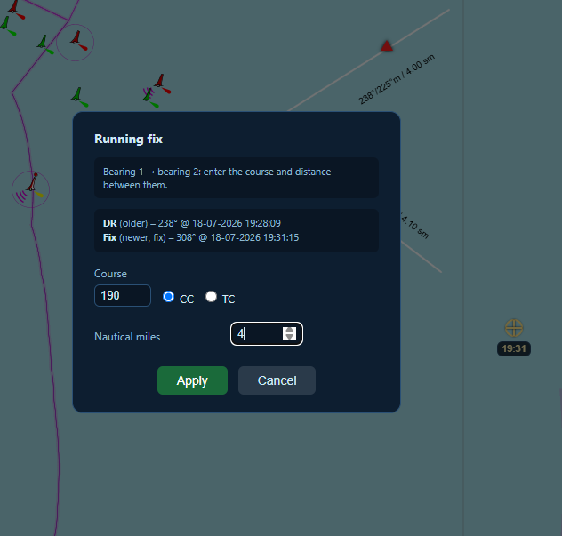
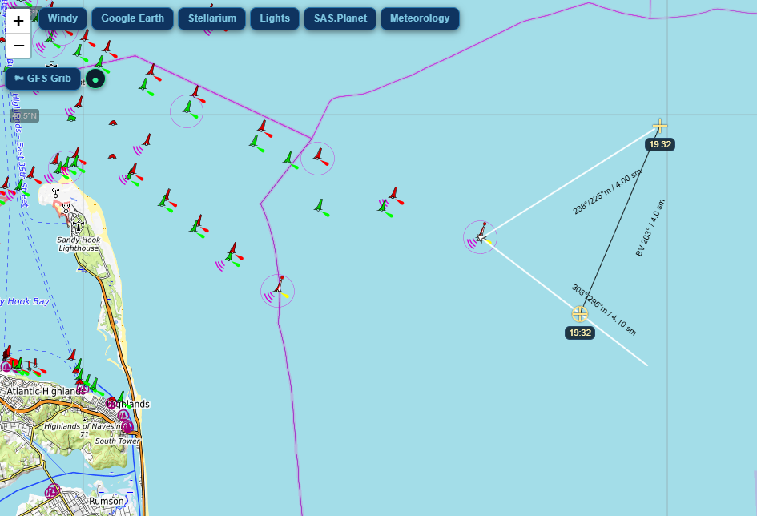
qtVlm spielt für SextantFix eine zentrale Rolle: Die App verzichtet bewusst auf ein eigenes, sehr aufwändiges Routen- und Wetterprogramm und verlässt sich stattdessen auf qtVlm — SextantFix übergibt dafür immer nur die aktuelle Position, den Rest erledigt qtVlm wie gewohnt.
Vorgeschlagener Workflow in der Zusammenarbeit mit qtVlm:
1. Bestimmen Sie Ihre Position in SextantFix (siehe Punkt 2 und 3).
2. Rechtsklick auf das Boot → Copy Position.
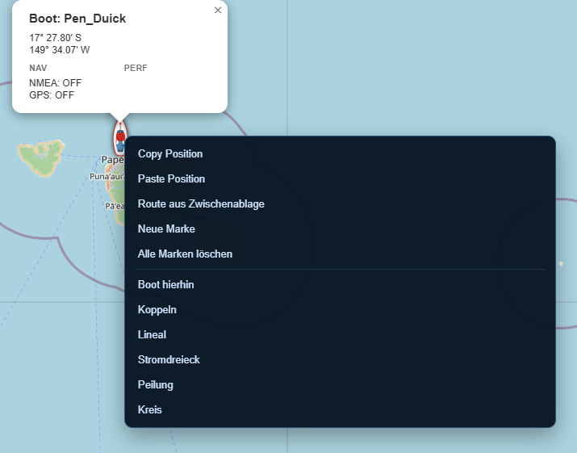
3. Wechsel zu qtVlm → Rechtsklick → Paste a mark (Marke einfügen).
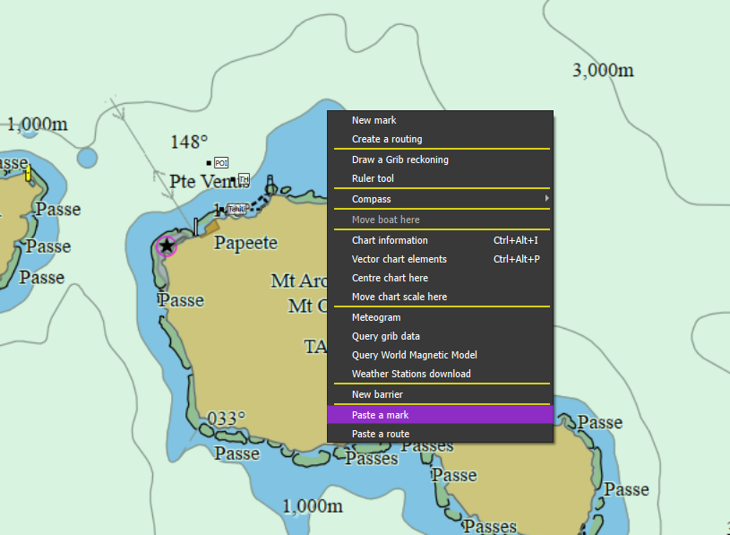
4. Erledigen Sie alle üblichen Aufgaben in qtVlm — Wettergribs laden, Route planen, wie gewohnt.
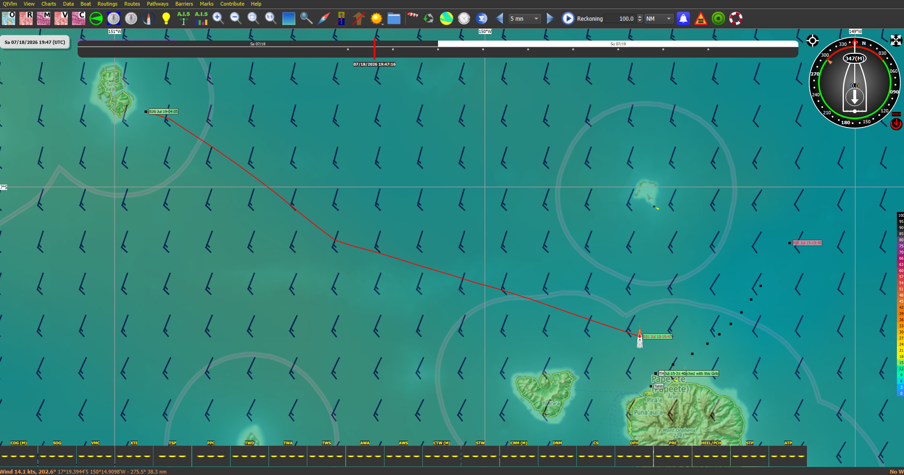
5. Route in qtVlm kopieren (Rechtsklick-Menü). 6. Route in SextantFix einfügen — per Strg+V oder über das Rechtsklick-Menü.
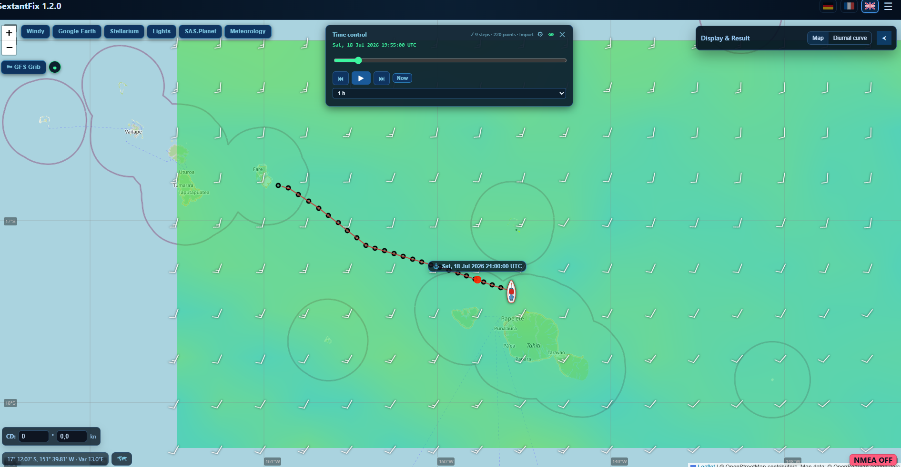
7. Optional: Über den Schalter „GRIB" lassen sich Gribfiles direkt aus qtVlm importieren oder eigene NOAA-Daten laden. Die Zeitleistenfunktion zeigt dazu die errechnete Bootsposition entlang der Route.
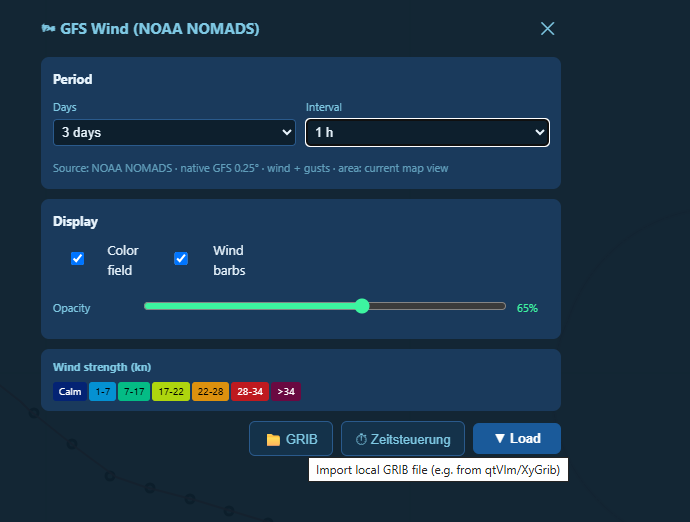
Die Knöpfe oben links öffnen sechs externe Werkzeuge — jeweils mit der aktuellen Bootsposition, soweit möglich.
1. Windy
Überträgt automatisch die aktuelle Position. Eine aus qtVlm exportierte GPX-Route kann zusätzlich geladen werden.
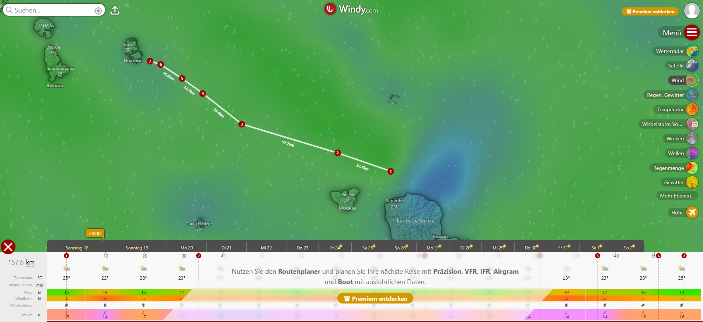
2. Google Earth
Position wird automatisch übergeben, mit direktem Zoom auf die Position. Eine Route kann per Copy & Paste übergeben werden.
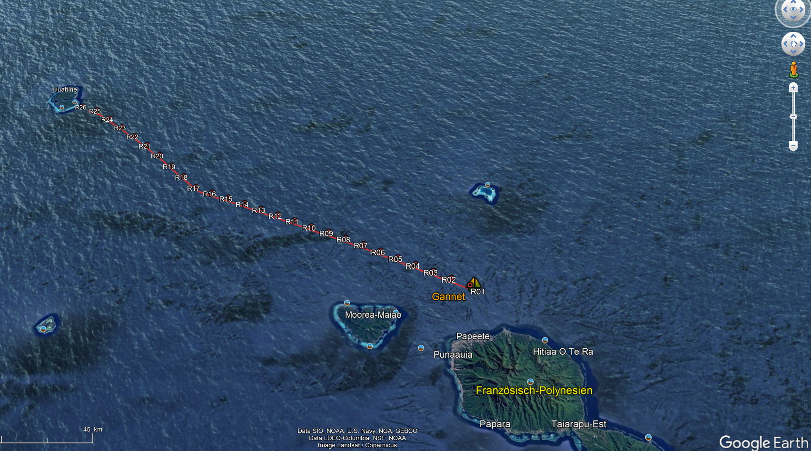
3. Stellarium
Beim ersten Aufruf ist einmalig der Pfad zur stellarium.exe einzugeben. Bei Nachtmessungen erleichtert Stellarium die Auswahl der Navigationssterne — die aktuelle Bootsposition wird übergeben, sodass der Nachthimmel den passenden Ausschnitt zeigt.
Dafür müssen in Stellarium einmalig zwei Erweiterungen aktiviert werden: Unter F2 (oder Seitenleiste) → Reiter „Erweiterungen" die Erweiterung „Fernbedienung" auswählen (nicht „Remote Sync") und „Beim Start laden" sowie den Server-Autostart aktivieren, danach Stellarium einmal neu starten. Für die Navigationssterne zusätzlich die Erweiterung „Navigationssterne" auswählen und ebenfalls „Beim Start laden" aktivieren.
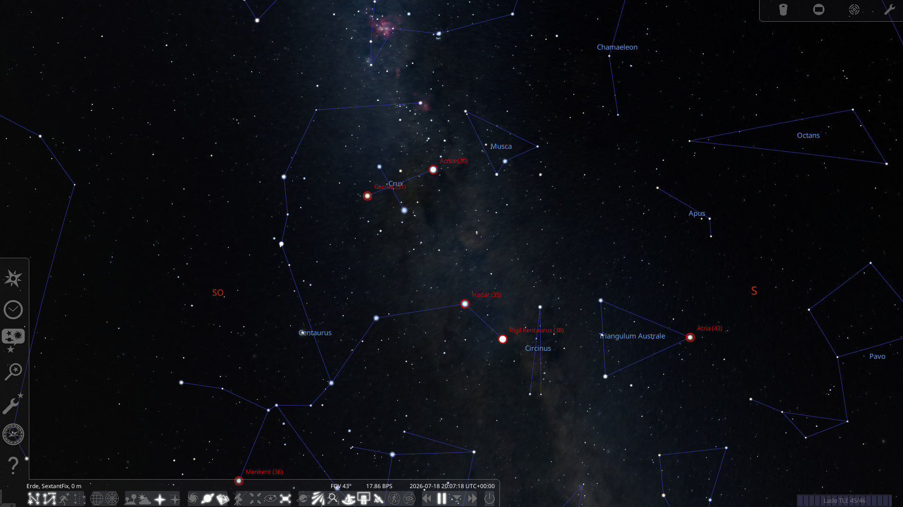
4. Leuchtfeuer online
Ein wirklich nettes Gadget von Frank Schmirler: Ähnlich wie qtVlm zeigt es Blinkfrequenz, -dauer und -farbe der Leuchtfeuer — sehr hilfreich beim Einüben der Lichterdifferenzierung bei Nacht.
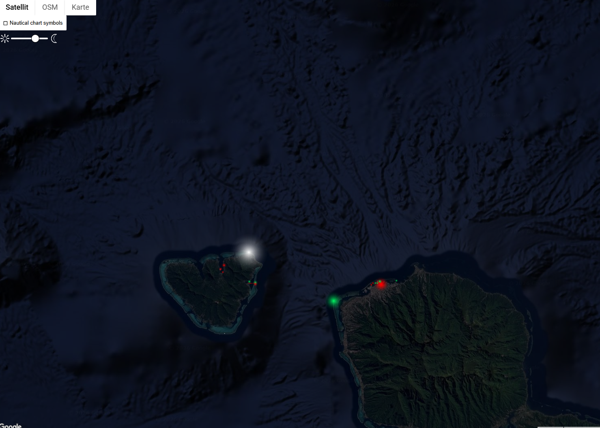
5. SAS.Planet
Pfadeingabe erforderlich, erlaubt diverse zusätzliche Karten und vieles mehr. Die Position wird in die Zwischenablage kopiert — in SAS.Planet über „Goto" → „Paste from clipboard" einfügen (ein einfaches Strg+V reicht in SAS.Planet nicht aus).
6. Meteorologie
Mehrere ständig aktualisierte Wetterkarten zeigen Hoch-/Tiefdruckgebiete und Frontenverläufe. Je nach Position des Bootes wird automatisch die passende Quelle gewählt.
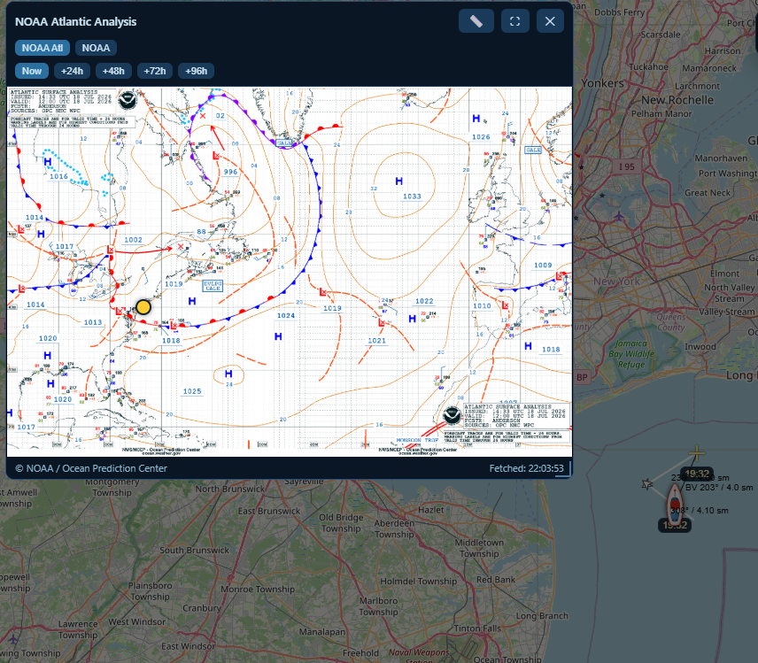
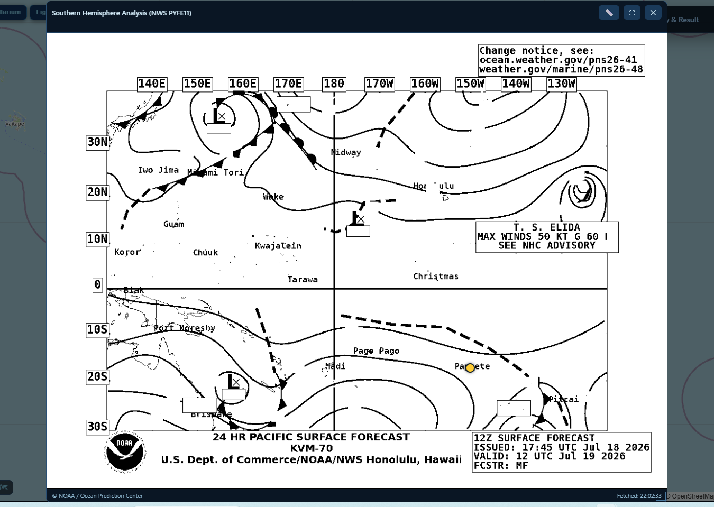
Eine Ausnahme ist die Südatlantik-Karte (Quelle: Brasilien): Sie liegt nur als KML-Datei vor, die SextantFix nicht selbst darstellen kann, und der automatische Download per Programm gelingt hier bislang nicht. Stattdessen öffnet sich die Karte in Google Earth Pro — ohne automatische Positionsübergabe.

Je nach Karte lässt sich zusätzlich die Windstärke durch Messung des Isobarenabstands abschätzen (nach Burch).